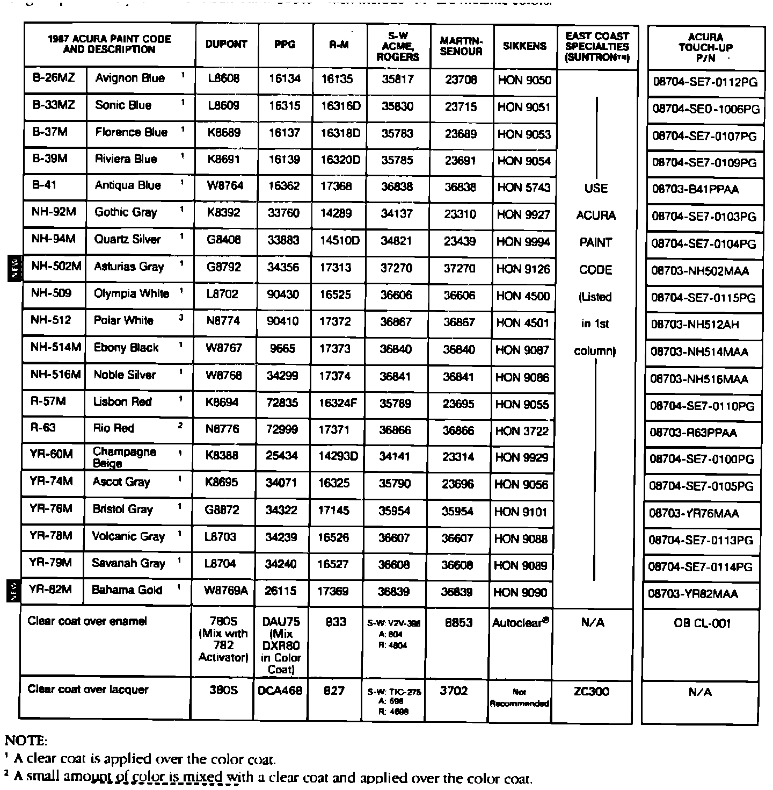
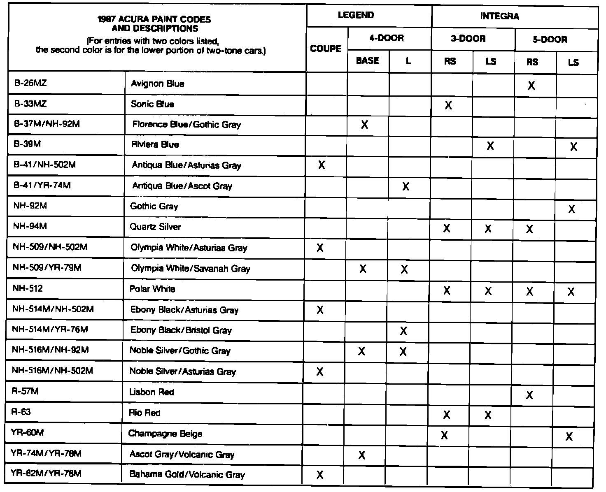

Paint Code Legend
March 16, 1987BULLETIN NO. 87-004
YEAR 1987
MODEL ALL
APPLICATION ALL
1987 Paint Codes (Supersedes 86-016, dated November 3, 1986)


Paint formulations are determined each paint company. For questions regarding formulas or matching, contact your local paint distributor or the paint company's nearest regional office.
Original paint is acrylic enamel. Acura Paint Codes which include "M" are metallic colors.